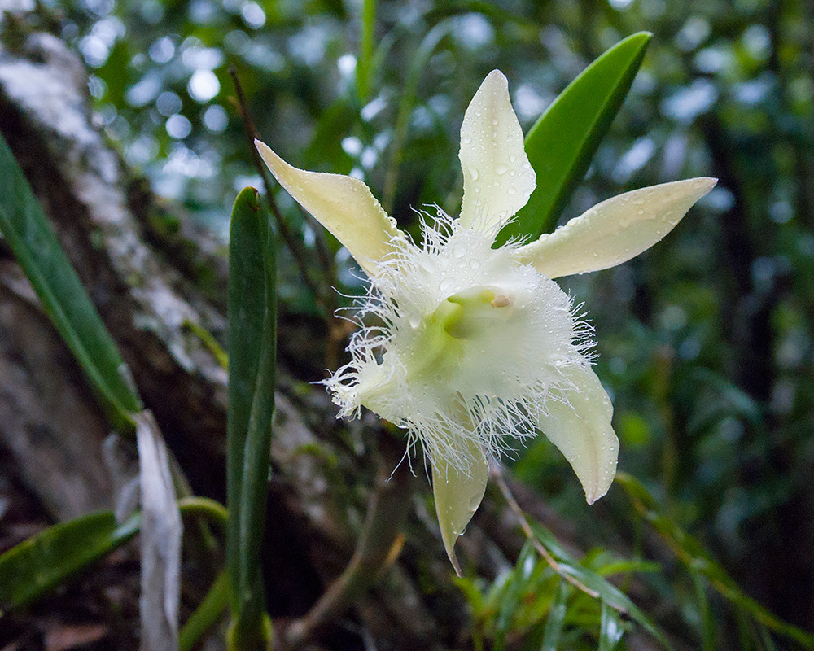
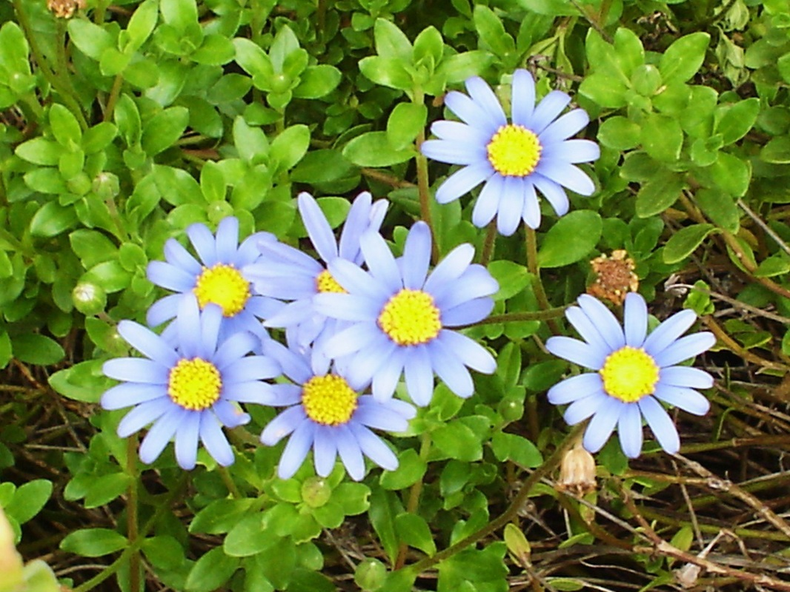
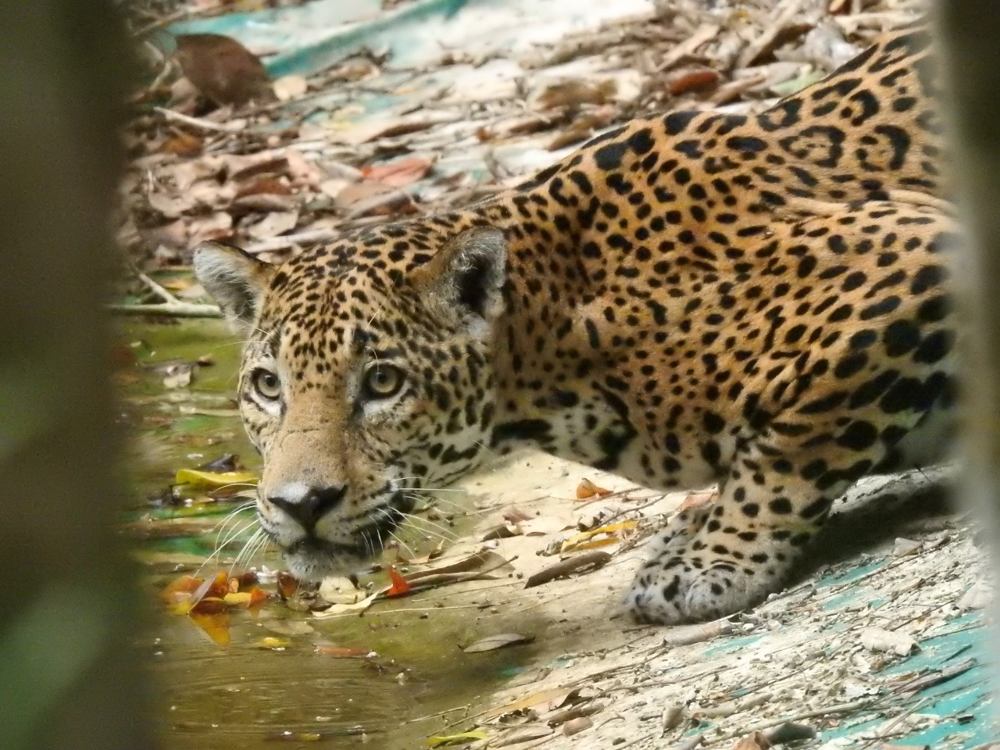
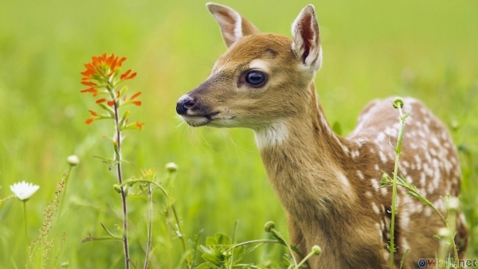

Flora
Para el 1990 el departamento contaba con las siguientes clases de plantas: palma cimarrona, manaca, corozo, otutz, lancetilla o guiscoyol, botan, xate, cacahuate, chirimoya, almendro, pimienta gorda, mimbre y bayal; Entre las plantas existentes dentro del Municipio para el año 2005 se encuentran: la chaya, macuy o hierba mora, chipilín, camote, yuca, macal, payaque y papa. Entre las ornamentales se encuentran xate y bayal (una especie que tiene usos similares al mimbre). Se usan como plantas medicinales: la ruda, el apazote, la hierba buena, caña fístula, copal, culantrillo, condeamor, chichibej, epazín, guaco, ixtupú maculís, nabaa, pito y el placan. Los recursos de la flora natural en el municipio han sido mal aprovechados y a la vez deteriorados por el proceso de aumentarla producción de la superficie de los campos de cultivo y pastizales, tradicionalmente la población del Municipio depende de los recursos naturales como base para su subsistencia y la satisfacción de sus necesidades alimenticias, medicinales, energéticas y de vivienda 
En la mayoría de estos bosques predominan los árboles caducifolios, como la teca y la uña de vaca (Bauhinia variegata), que durante la estación seca pierden las hojas. Como las plantas pierden humedad a través de las hojas, eso les permite conservar agua durante el período seco. Los árboles desnudos abren el dosel y permiten que los rayos solares lleguen al suelo, lo que facilita el crecimiento de un denso sotobosque.
La fauna del Municipio como en todo el departamento de Petén, está en peligro de extinción tanto por la destrucción de los bosques como por la caza inmoderada de las especies que se agudiza a partir de 1990. Para 1992 en el Municipio aún se podían observar aproximadamente 24 especies de animales entre los que se pueden mencionar, jaguar, puma, tigrillo, onza, ocelote, primates, tucanes, guacamayas, loros y aves rapaces. Al momento de la investigación (año 2005) se encuentran venados, cabritos silvestres, jabalíes, tepezcuintles, coches de monte, ardillas, tereques, gatos de monte, pisotes, monos saraguates, tacuazines (zarigüeya), loros, guacamayas y gavilanes; variedad de serpientes, como barba amarilla, mazacuata, coral, falso coral y otras. Existen muchas especies en peligro de extinción como: jaguar, tigrillo, danta o tapir, tucán, guacamayas, corolitas, faisán, pavo petenero, venado, loro, tepezcuintle y jabalí.